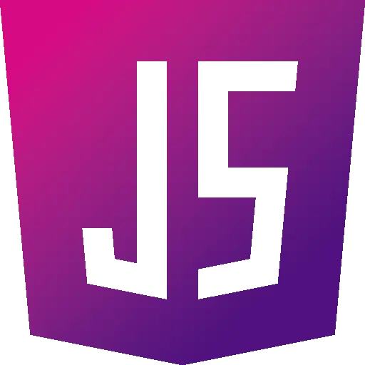
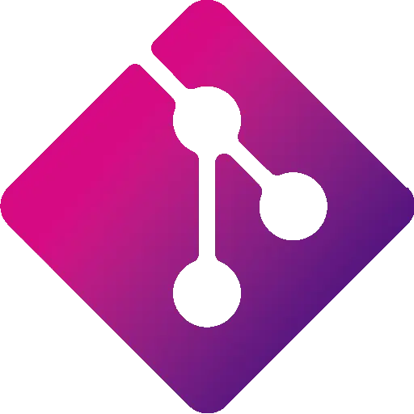
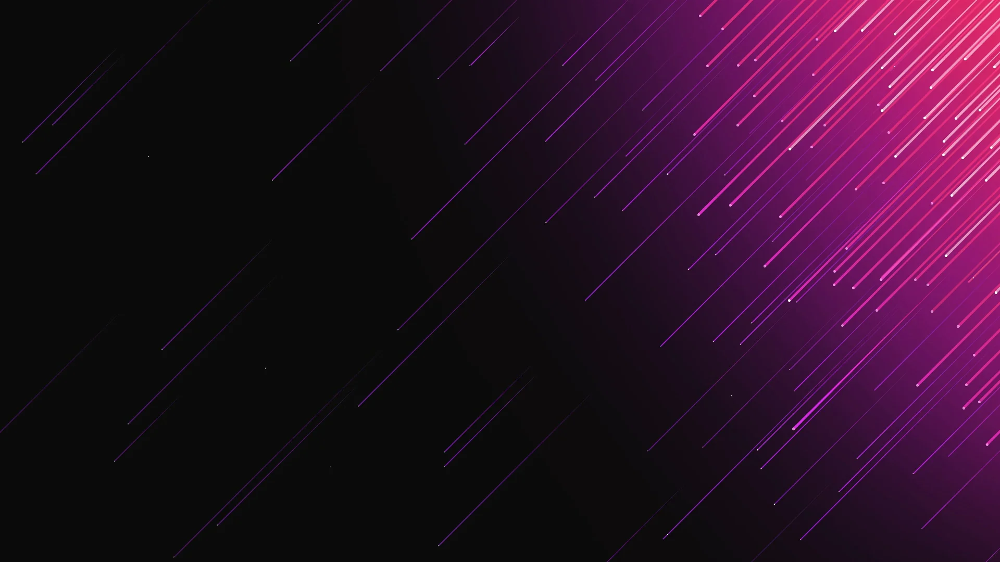

I'm MystiqDev — I build clean, fast, and beautifully interactive websites using pure HTML, CSS & JavaScript. No frameworks, no bloat — just craftsmanship.
Hi, I'm Mysti — a front-end developer based in Oman. I specialize in clean, responsive websites that load fast, look sharp on every device, and feel genuinely crafted rather than assembled.
I build with pure HTML, CSS, and Vanilla JavaScript. No bulky frameworks — just lean, maintainable code with a strong eye for typography, spacing, and interaction design.

JavaScript
GitWebsites that work flawlessly on every screen — from smart fridges to ultrawide monitors. Fluid layouts, adaptive components, and mobile-first thinking.
Fast, efficient delivery without cutting corners. I move quickly through the build process while keeping every detail polished and every line intentional.
Smooth animations, hover effects, and micro-interactions that give your site personality. Nothing gratuitous — every motion earns its place.
Pure HTML, CSS, and JavaScript — no React, no bloat. Lean, fast-loading sites with clean code you can actually read and maintain long-term.
Conversion-focused landing pages that grab attention, guide visitors through your value proposition, and compel them to take action.
Professional websites that build credibility, showcase your services clearly, and make your brand look ready for real clients and serious business.
The next project is currently in development. Stay tuned — something new is on the way.

We discuss your goals, brand, and what you need. You share content, references, and preferences — I ask the right questions to fully understand your vision.
I craft a clean, responsive layout tailored to your brand. Every detail is considered — typography, spacing, animations, and mobile experience.
You review the result, request any tweaks, and once you're satisfied — I hand over clean, commented code ready for deployment. Revisions always included.
Please share your content (text & images), your logo if you have one, any colour preferences, and a few example websites you like. That's everything I need to begin.
Absolutely. Every site I build is fully responsive and tested on mobile, tablet, and desktop devices.
No — you'll need your own hosting and domain. I can guide you through the setup process if you're not sure where to start.
Yes. Additional pages are available as an extra service — just reach out when you're ready to expand.
I currently focus on static and business websites. If you have specific e-commerce requirements, contact me first and we can discuss what's possible.
Yes — I recommend it. Messaging first helps us align on your requirements, avoid misunderstandings, and makes the whole process smoother for both sides.
Have a project in mind? I'd love to hear about it. Fill out the form or find me on a freelance platform below.